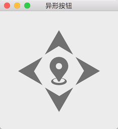
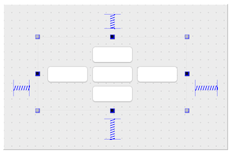

不少软件里看到过如下的按钮组，有 5 个按钮，中间 1 个，上下左右各一个：

可以通过绘图的方式实现：计算每一个按钮的位置、大小、图片、点击的时候判断点击到了哪个按钮然后刷新绘制它的样式，并调用相应的函数执行点击操作，难度还是相当大的。
还有更简单的方法：使用 QGridLayout + QPushButton + QSS 实现，先用 QGridLayout 把 5 个按钮布局如下 (对大家来说没有什么难度，就不浪费时间进行介绍了)：

然后使用 QSS 的 border-image 给按钮在不同状态时贴上不同的背景图片即可：
- 为了方便的找到每个按钮，分别给他们命名为 topButton, rightButton, bottomButton, leftButton, centerButton，一看名字就知道指的是哪一个按钮，这里就不再一一赘述
- 用 QSS，先设置所有按钮的公共样式
- 再根据按钮的名字 (objectName) 使用 border-image 设置按钮各自在不同状态下的背景图
就能得到开头时效果图的按钮组合了:
1
2
3
4
5
6
7
8
9
10
11
12
13
14
15
16
17
18
19
20
21
22
23
24
25
26
27
28
29
30
31
32
33
34
35
36
37
38
39
40
41
42
43
44
45
46
47
48
49
50
51
52
53
54
55
56
57
58
59
60
61
62
63
64
65
|
QPushButton {
border-width: 0 0 0 0;
width: 64px;
height: 64px;
min-width: 64px;
max-width: 64px;
min-height: 64px;
max-height: 64px;
}
#centerButton {
border-image: url(/Users/Biao/Desktop/abnormity-buttons/center.png);
}
#centerButton:hover {
border-image: url(/Users/Biao/Desktop/abnormity-buttons/center-hover.png);
}
#centerButton:pressed {
border-image: url(/Users/Biao/Desktop/abnormity-buttons/center-pressed.png);
}
#topButton {
border-image: url(/Users/Biao/Desktop/abnormity-buttons/top.png);
}
#topButton:hover {
border-image: url(/Users/Biao/Desktop/abnormity-buttons/top-hover.png);
}
#topButton:pressed {
border-image: url(/Users/Biao/Desktop/abnormity-buttons/top-pressed.png);
}
#rightButton {
border-image: url(/Users/Biao/Desktop/abnormity-buttons/right.png);
}
#rightButton:hover {
border-image: url(/Users/Biao/Desktop/abnormity-buttons/right-hover.png);
}
#rightButton:pressed {
border-image: url(/Users/Biao/Desktop/abnormity-buttons/right-pressed.png);
}
#bottomButton {
border-image: url(/Users/Biao/Desktop/abnormity-buttons/bottom.png);
}
#bottomButton:hover {
border-image: url(/Users/Biao/Desktop/abnormity-buttons/bottom-hover.png);
}
#bottomButton:pressed {
border-image: url(/Users/Biao/Desktop/abnormity-buttons/bottom-pressed.png);
}
#leftButton {
border-image: url(/Users/Biao/Desktop/abnormity-buttons/left.png);
}
#leftButton:hover {
border-image: url(/Users/Biao/Desktop/abnormity-buttons/left-hover.png);
}
#leftButton:pressed {
border-image: url(/Users/Biao/Desktop/abnormity-buttons/left-pressed.png);
}
|
上面使用的图片请下载 abnormity-buttons.7z，别忘了把 QSS 中图片的路径修改为自己项目中的真实路径。
思考
也许你会问，你这些图片在哪里找到的？
- 如果公司有 Ui 设计师，找他们要吧
- 有很多提供图片下载的网站，我比较喜欢用阿里巴巴矢量图标库，里面还可以进行搜索
- 你也许还会问，我就只找到一个向下的箭头图标，找不到另外几个方向的，这个好办，旋转一下图片就可以了嘛，也就是说找到一个方向的图片，另外几个方向的也得到了
为什么不用 background-image 设置背景图？
使用 background-image 设置背景图时，如果背景图和 widget 的大小不一样，效果就很不理想，不会拉伸填满 widget，使用 border-image 可以解决这个问题，例如上面使用的背景图是 128x128 的，按钮的大小是 64x64 的，最终的效果很好。